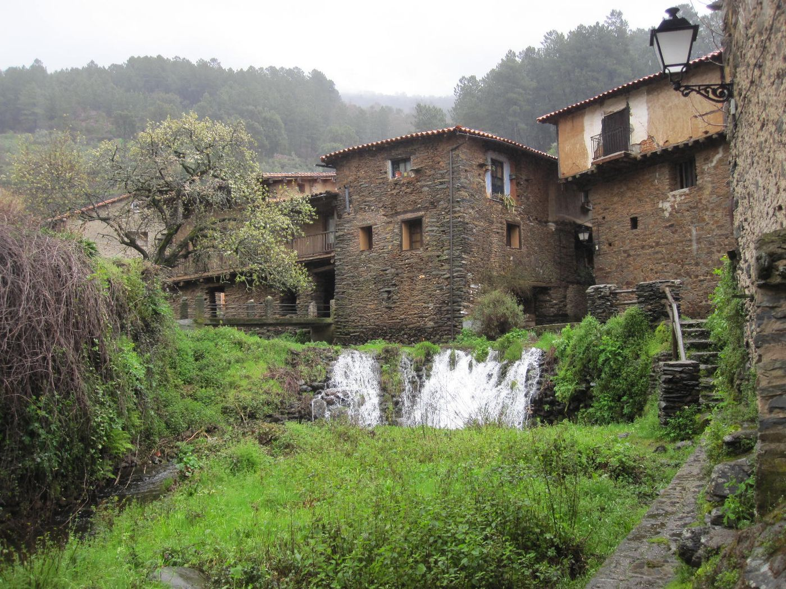
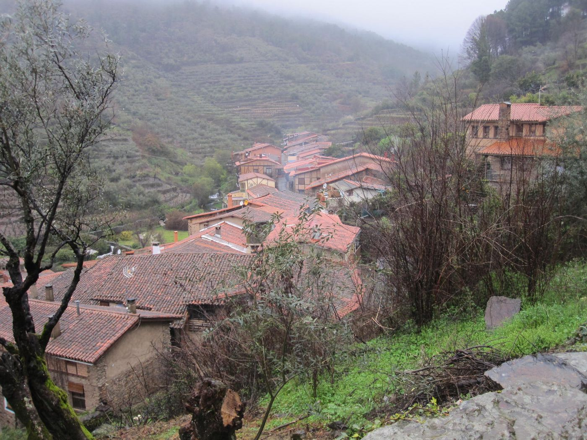
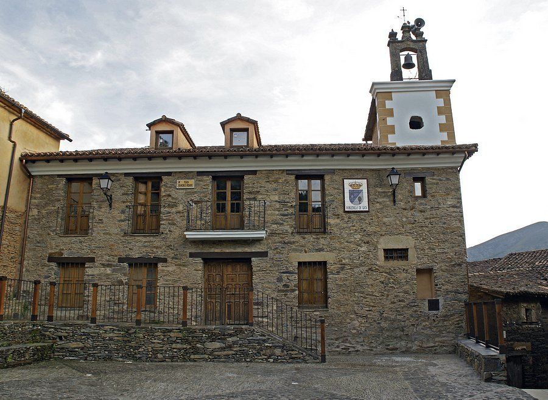
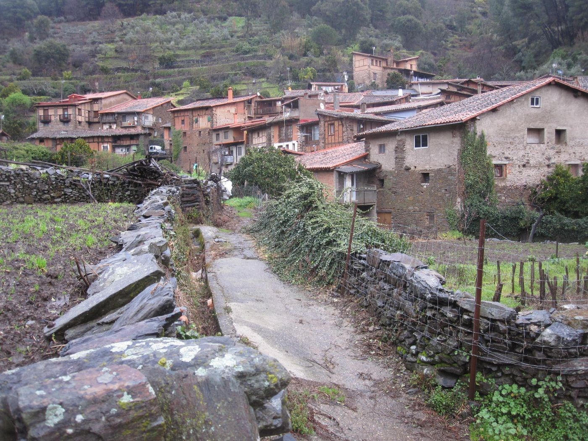
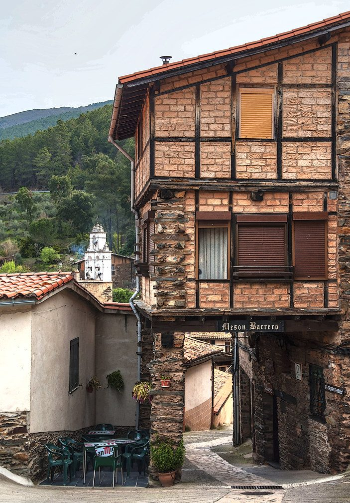
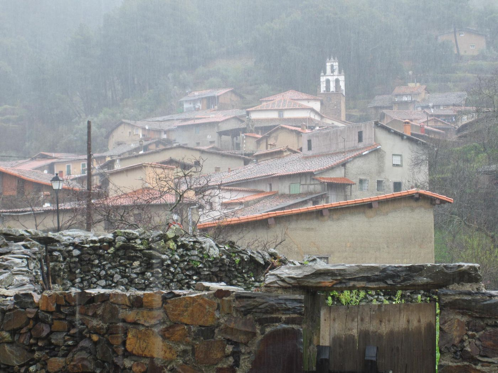
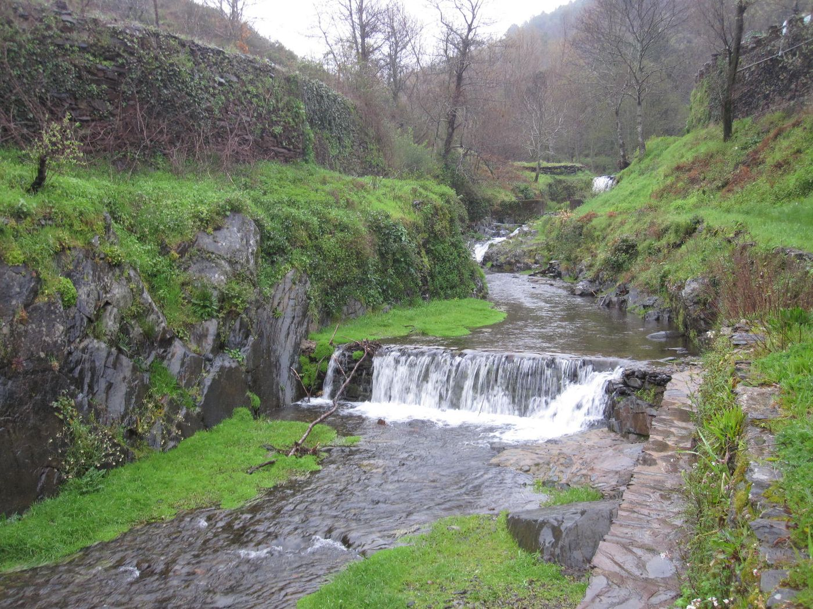

Pluma, presa y secreto
Ibérico a la brasa, al punto. Lo primero que recomiendan quienes repiten.
Asador familiar en Robledillo de Gata. Carne ibérica a la brasa, tablas de la sierra y flan de castañas, con el valle del Árrago desde el comedor.
Dónde comer en Robledillo de Gata
Producto de la sierra y raciones para compartir. Cocina casera de siempre.




Lo que más se pide
Ibérico a la brasa, al punto. Lo primero que recomiendan quienes repiten.
Quesos, embutido ibérico y jamón para el centro de la mesa mientras sale la carne.
Chuletón de ternera para dos o tres, entrecot, solomillo y chuletitas de cordero.
El postre de Robledillo, con las castañas de los castañares que rodean el pueblo.
Cocina tradicional extremeña.
El mesón
Un mesón de familia en una de las entradas del pueblo. Entras por el bar, tomas el vino y la tapa, y para comer te acompañan al salón de la planta de arriba, con el pueblo y la montaña delante.
Salón pequeño en la planta alta. Para grupos, reserva con unos días de margen.
Para el vino de antes o el picoteo de la noche cuando hace bueno.
Robledillo está en la sierra y en noviembre huele a castañas asadas. Aquí se come caliente.
Tronas para los pequeños. Si quieres llevarte la comida, llama y encárgala.
Puedes pagar con tarjeta, Bizum o efectivo.

Robledillo de Gata
Robledillo tiene 90 vecinos, es Conjunto Histórico y está en la lista de los Pueblos Más Bonitos de España. Casas de pizarra y madera con el río Árrago pasando por debajo. Se recorre en una mañana y da hambre.

Pasadizos de madera, balcones con flores y el Molino del Medio, un molino rehabilitado con visita guiada y cata de aceite. La iglesia de la Asunción, del siglo XVI, está en el centro.
Estamos en una de las entradas del pueblo. Reserva para el comedor y ven con ganas de carne; luego, el flan de castañas.

En verano, la piscina natural en lo alto del casco urbano. El resto del año, el camino de Santo Tomé entre bosque, o el Chorro de la Ovejuela, una cascada de unos 70 metros a pocos minutos.
Reservas
El comedor es pequeño y los fines de semana se llena. Para grupos, mejor con unos días de margen.
Teléfono
También: 927 67 11 22. Di cuántos sois, el día, la hora y si queréis comedor o terraza.
Horario
Abierto todos los días. En temporada baja puede variar: si vienes de lejos, llama antes.
Dirección
Calle Barrero, 20
10867 Robledillo de Gata (Cáceres)
Antes de venir
Entre semana se suele poder comer sin reserva. Viernes, sábados, domingos, puentes y en verano el comedor se llena: llama al 654 79 42 93 o escribe por WhatsApp y te guardamos sitio.
En el Barrero lo normal es entre 20 y 30 € por persona compartiendo tabla, carne, postre y vino. Un chuletón para dos sube un poco la cuenta.
La carta gira en torno a la brasa. Hay ensaladas, tabla de quesos, gazpacho en verano y sopa de ajo en invierno. Si tienes alguna alergia o intolerancia, dilo al reservar y te dicen qué se puede adaptar.
Sí. Hay tronas. Si venís en grupo con carritos, avísalo al reservar para prepararos la mesa.
Sí, aceptamos tarjeta, Bizum y efectivo.
El pueblo es de calles estrechas. Deja el coche en los aparcamientos de la entrada del pueblo; el mesón está en una de las entradas, a un paso.
Sí. Llama y encarga; te decimos a qué hora pasar a recogerla.
Cómo llegar
Calle Barrero, 20. Robledillo está en la cabecera del valle del Árrago, en el extremo norte de Sierra de Gata, pegado a Las Hurdes.